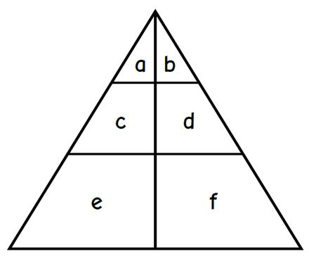
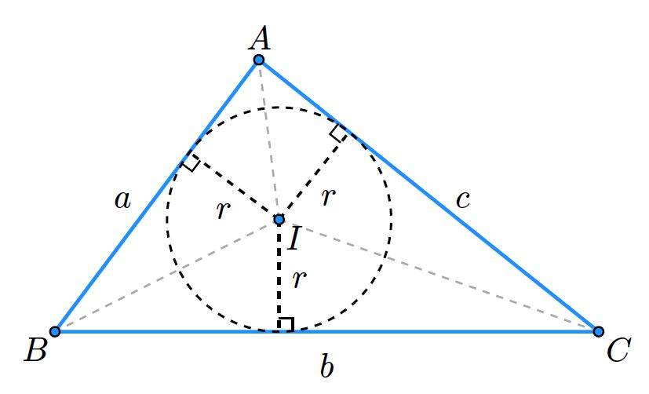
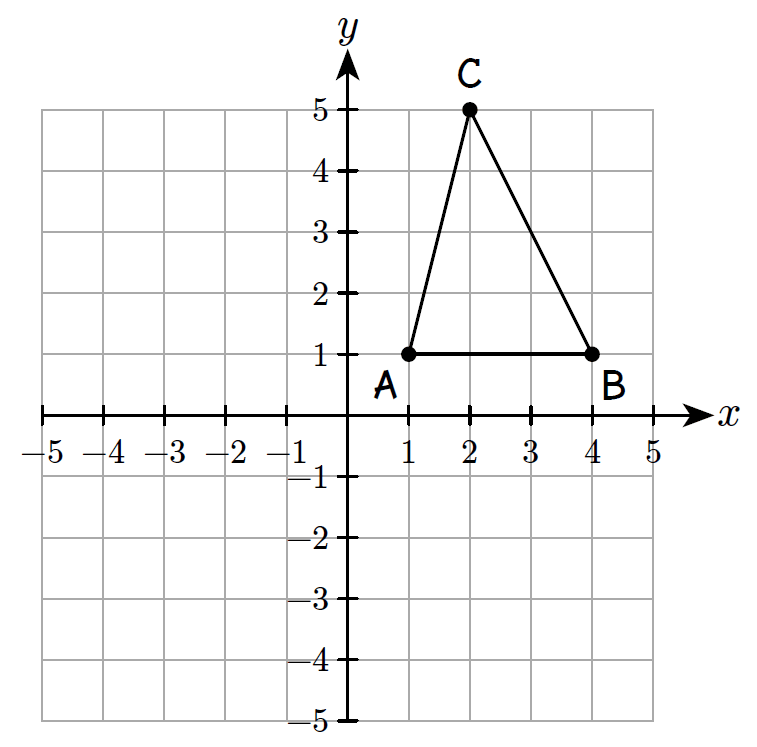
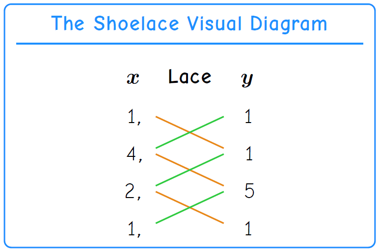
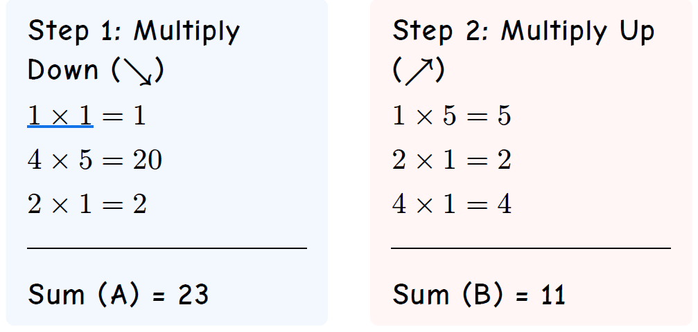
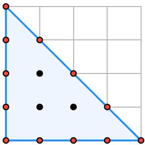
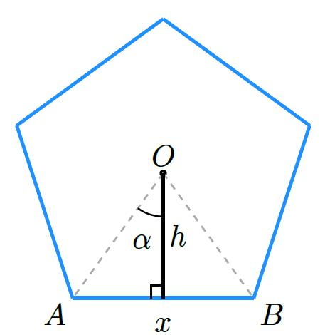

Explore mathematical concepts, methods, and worked examples.
Geometric Strategies
The Letter Strategy
for Counting Triangles
The letter strategy is a systematic approach to
counting triangles in complex geometric figures. By labeling each
individual region with a letter, you ensure that every possible
combination is checked without double-counting.
Divided Triangle
In this figure, a large triangle is divided by two horizontal lines
and one vertical line from the apex, creating six distinct regions. Note
that individual regions may not all be triangles.

To find the total number of triangles, we categorize them by the
number of labeled regions they contain:
1-region triangles: Only the top regions
a and b are triangles. Regions c, d,
e, and f are quadrilaterals.
Total: 2 (a, b)
2-region triangles:
From a: ab,
ac
From b: bd (Note: ba
is a duplicate of ab)
No other 2-region combinations form triangles.
Total: 3 (ab, ac, bd)
3-region triangles:
Combinations: ace, bdf
No other 3-region combinations form triangles.
Total: 2 (ace, bdf)
4-region triangles:
Combination: abcd
Total: 1 (abcd)
5-region triangles:
No triangles are formed using exactly 5 regions.
Total: 0
6-region triangles:
The entire figure: abcdef
Total: 1 (abcdef)
Final Calculation: Summing these groups:
There is a total of 9 triangles in this figure.
Polygon Area
Triangle area: Heron’s
formula
Calculating the area of a triangle usually requires knowing its
vertical height. However, Heron’s Formula is a “power
strategy” that allows us to find the area using only
the three side lengths. This is particularly useful for irregular
triangles where the height is not easily measured.
The formula
For a triangle with side lengths 𝑎, 𝑏, and 𝑐, the area (𝐴) is given
by:
Where 𝑠 is the semi-perimeter (half of the
perimeter):
Example:
If a triangle has sides 𝑎=3, 𝑏=4, and 𝑐=5:
Find 𝑠:
Apply Heron’s:
Find Inradius:
Triangle area: Inradius
formula
In standard geometry, we often calculate the area of a triangle using
its base and height (𝐴=12𝑏ℎ). However, there is a more “elegant” method
that uses the triangle’s inner circle (the
incircle).
The formula
The area (𝐴) of any triangle is the product of its
inradius (𝑟) and its semi-perimeter
(𝑠):
Inradius Formula:
where:
r is the radius of the circle inscribed
perfectly inside the triangle.
s is the semi-perimeter:
The visual proof
Imagine a triangle with sides 𝑎, 𝑏, and 𝑐. If we connect the center
of the incircle (the incenter) to each of the three
vertices, we split the large triangle into three smaller triangles.
Each small triangle has one side of the original triangle as its
base.
Each small triangle has the inradius (𝑟) as its
height.

Therefore:
Example:
Consider a right triangle with sides 3,
4, and 5.
Perimeter: 3+4+5=12
Semi-perimeter (s): 12÷2=6
Area (standard):
Using our formula 𝐴=𝑟𝑠:
For this specific triangle, the inradius is exactly
1.
Triangle area: Shoelace
formula
The Shoelace Formula is a method to find the area of
a polygon (like a triangle or quadrilateral) when you know the
coordinates of its corners:
,…
Why is it called “shoelace”
Because you multiply the numbers by criss-crossing them like lacing a
shoe. You multiply diagonally down, then
diagonally up.
The formula (simple version)
For a triangle with points
(,
the area formula is:
The vertical lines |…| mean absolute value (always
make the result positive).
Example:
To find the area of the triangle with points (1, 1), (4, 1), and (2,
5), we list them in a column and repeat the first point
at the end.
To get the vertices in order, the easiest way is to plot them on a
coordinate plane.



Step 3: The area is half of the difference between
the two sums:
Streamlined calculation
Vertex translation methods
Shift by (−1, −1):
Shift by (−4, −1):
Shift by (−2, −5):
Streamlined
calculation of vertex translation
Select a vertex with small coordinates to shift
to (0,0).
Calculate the
determinant.
Any polygon: Shoelace formula
List the points in order.
Repeat the first point at the bottom.
Multiply diagonally down and add.
Multiply diagonally up and add.
Subtract, take the absolute value, and divide by 2.
Pick’s theorem
The area of a lattice polygon is given by this formula.
Pick's Theorem:
I: Number of lattice points strictly
Inside the polygon.
B: Number of lattice points on the
Boundary (edges and vertices).
A: The resulting Area of the
polygon.
Example:
Calculate the area of triangle (0,0), (4,0), (0,4).

Calculation:
Inside points (black): 𝐼=3
Boundary points (red): 𝐵=12
Regular formula
The area 𝐴 of any regular polygon with 𝑛 sides of length 𝑥 can be
calculated using the following formula.
Regular Polygon Formula:
Derivation from Geometric Construction
The formula is derived by dividing the regular polygon into 𝑛
congruent isosceles triangles, such as △𝑂𝐴𝐵

The Central Angle (𝛼): The angle at the center
of the polygon for one triangle is
The height ℎ bisects this, so
The Base Angle: In the right-angled triangle
formed by the height ℎ, the angle at the base is
Finding the Height (ℎ): Using the tangent of the
base angle (the opposite over the adjacent):
Total Area: The area of one triangle
is1
Multiplying by 𝑛 triangles:
Special case: equilateral
triangle
This general formula can be used to derive the standard area of an
equilateral triangle. For 𝑛=3:
Example calculation
To find the area of a regular pentagon (𝑛=5) with each side 𝑥=10
cm: